Kimetsu no Yaiba: Quienes son las 12 lunas demoniacas?
Las 12 Lunas Demoníacas son el grupo de demonios más poderoso bajo las órdenes de Muzan. A continuación, te contamos quiénes son:
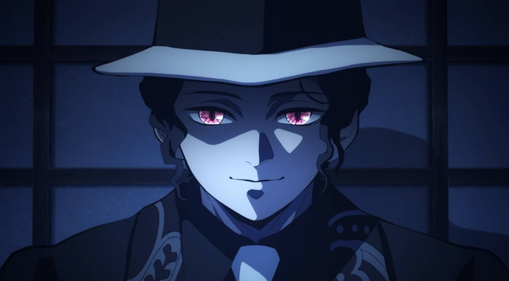
En el mundo de Kimetsu no Yaiba existen demonios que devoran, torturan y atormentan a los humanos de Japón durante la noche. Debido a esto, el Cuerpo de Exterminio de Demonios debe encargarse de defender a los ciudadanos y combatir con dichos demonios.
Existe un demonio llamado Kibutsuji Muzan, quien es considerado el más poderoso de todos, y es el antagonista principal de la serie. Muzan es el creador de estas criaturas, por ende, estos sienten devoción y terror hacia él, por lo que obedecen sus órdenes.
Es precisamente gracias a esto último que Kibutsuji creó una organización llamada “Las Doce Lunas Demoníacas”. A continuación, te mostraremos más información acerca de esta agrupación y cómo se encuentra conformada.
Que son las 12 lunas demoniacas?
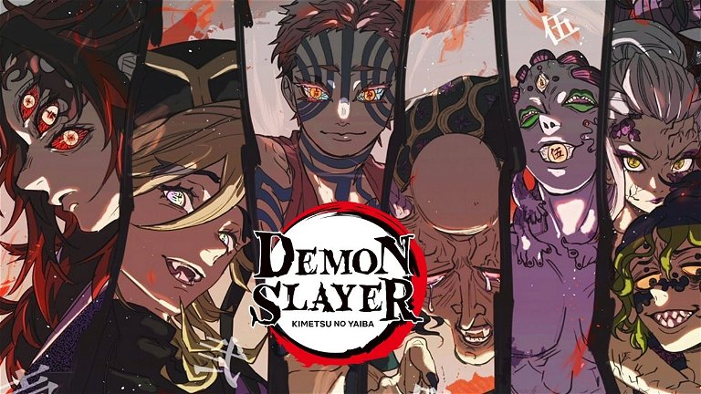
Las Doce Lunas se dividen en dos grupos: Lunas Superiores (también llamadas Lunas Crecientes) y Lunas Inferiores (o Lunas Menguantes). Cada una posee un número que se encuentra reflejado en sus ojos. En el caso de las inferiores, la marca del número se encuentra en el ojo izquierdo, mientras que las superiores tienen marcados ambos ojos.
El rango de poder de las Lunas depende del número que tienen asignado, siendo las que tienen un número más bajo más poderosas. No obstante, la escala de poder se encuentra dividida en dos, por lo cual la Luna inferior seis es la más débil de todas y la Luna superior uno es la más fuerte.
Hechas estas aclaraciones, ahora podemos proceder a mostrarte cada una de las Lunas Inferiores.
|
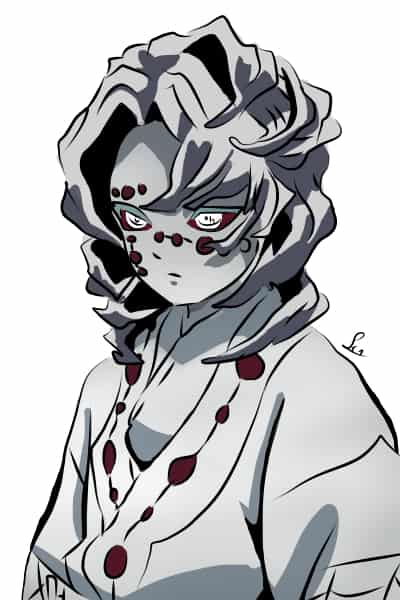 |
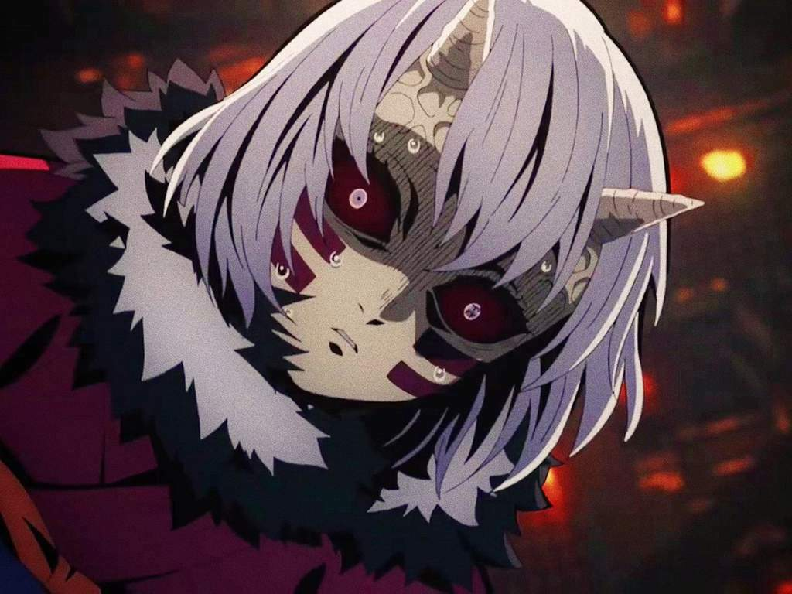 |
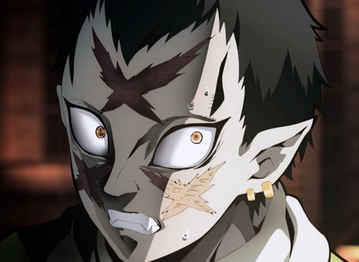 |
| Luna Inferior seis: Kamanue |
Luna Inferior cinco: Rui |
Luna Inferior cuatro: Mukago |
Luna Inferior tres: Wakuraba |
| 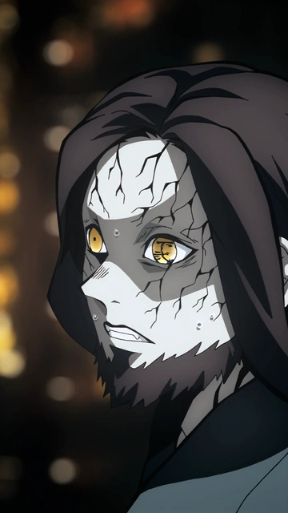 |
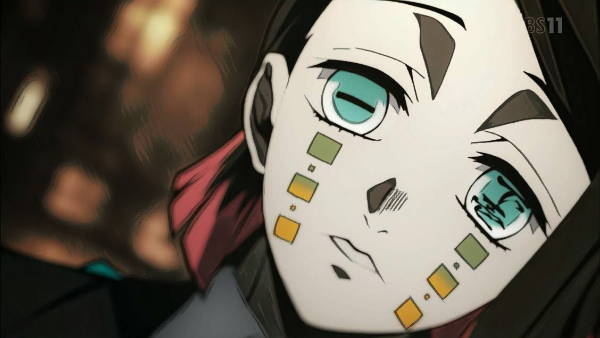 |
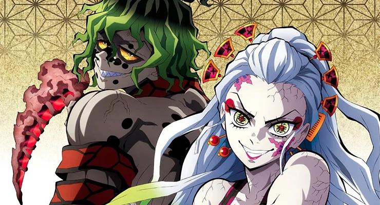 |
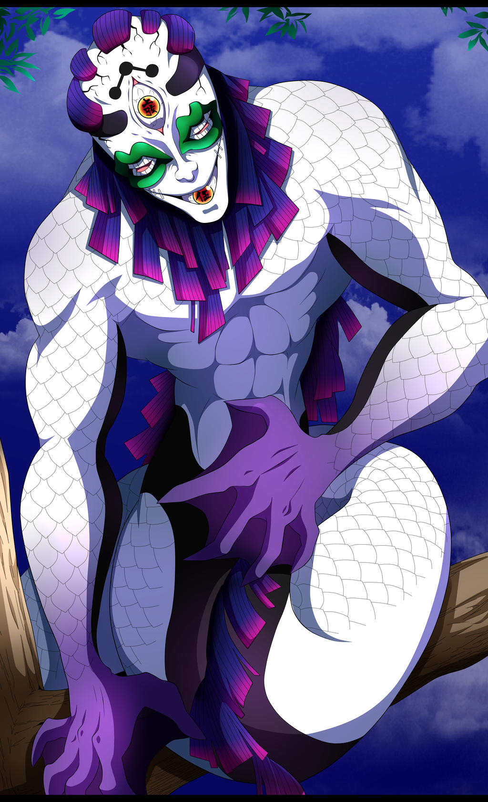 |
| Luna Inferior dos: Rokuro |
Luna Inferior uno: Enmu |
Luna Superior seis: Daki y Gyutaro |
Luna Superior cinco: Gyokko |
| 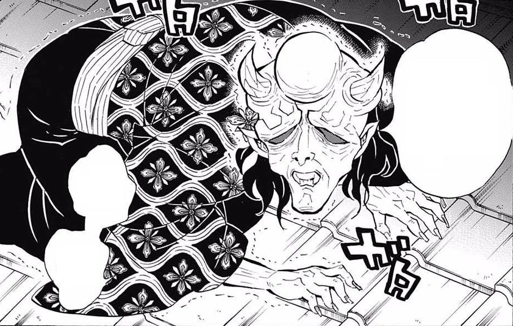 |
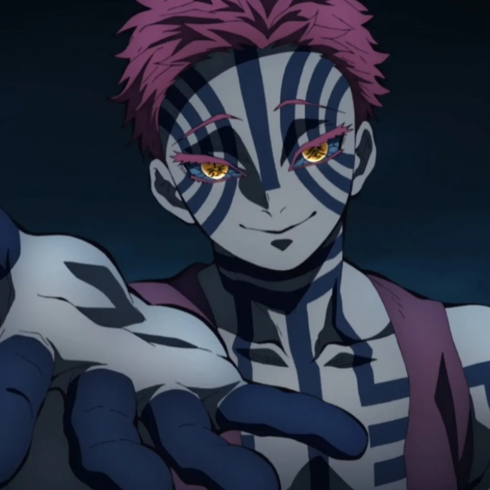 |
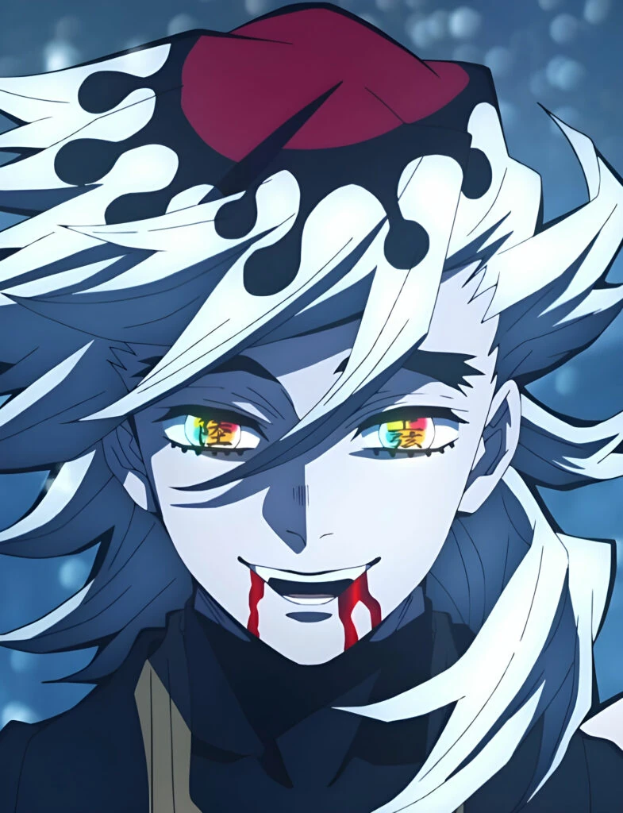 |
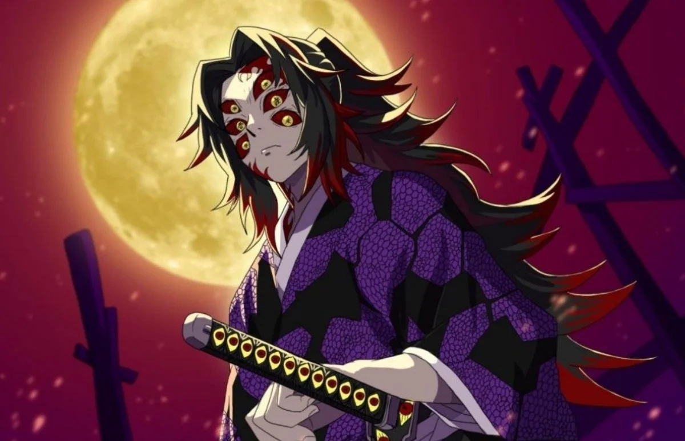 |
| Luna Superior cuatro: Hantengu |
Luna Superior tres: Akaza |
Luna Superior dos: Doma |
Luna Superior uno: Kokushibo |